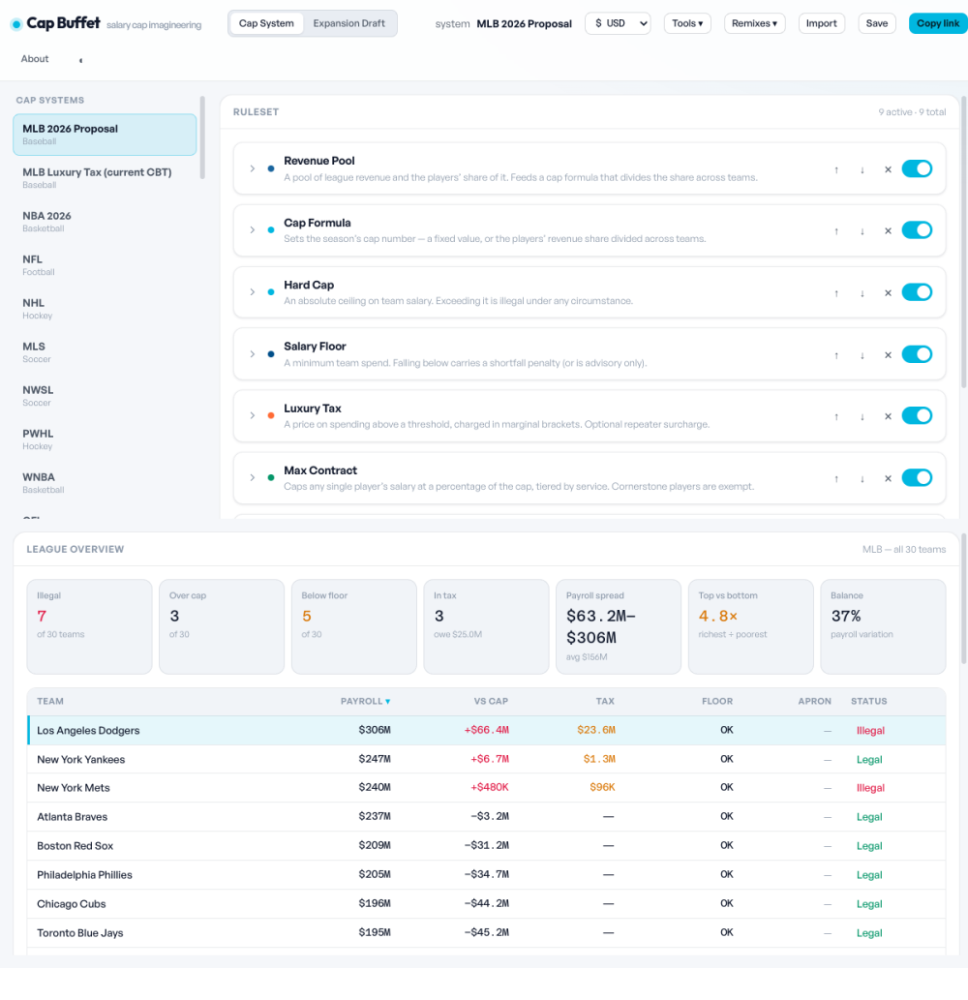
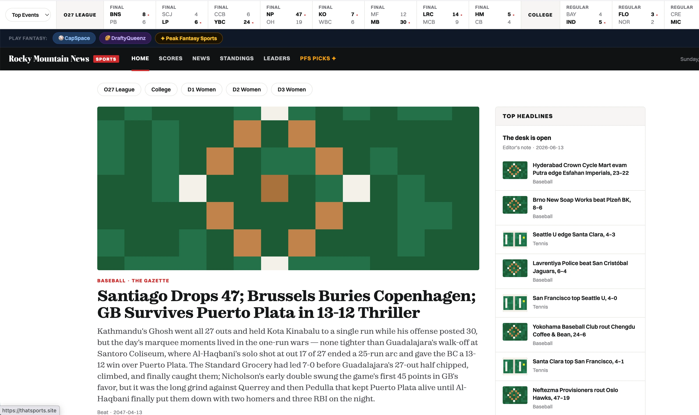
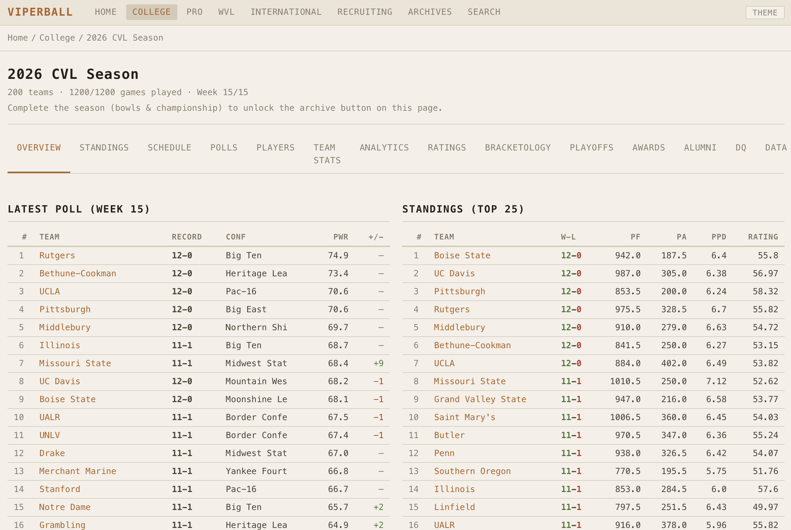
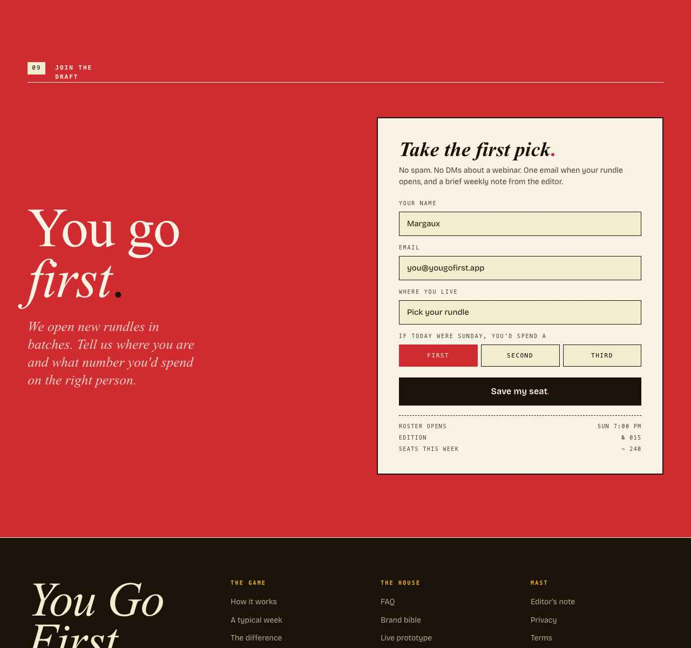
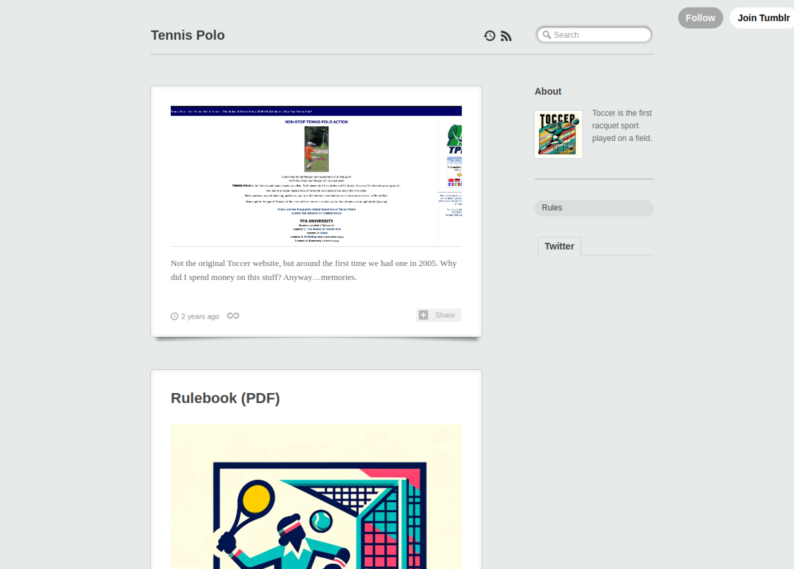
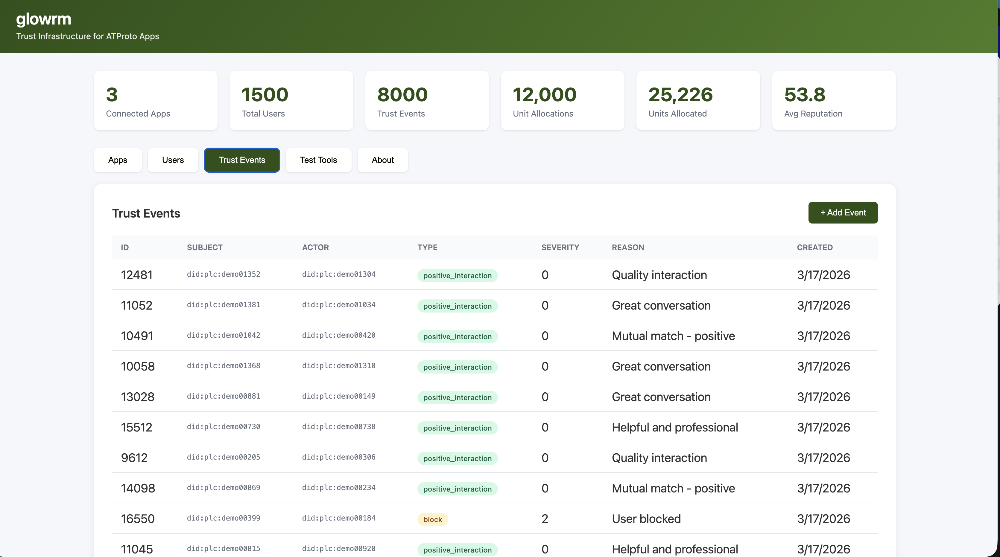
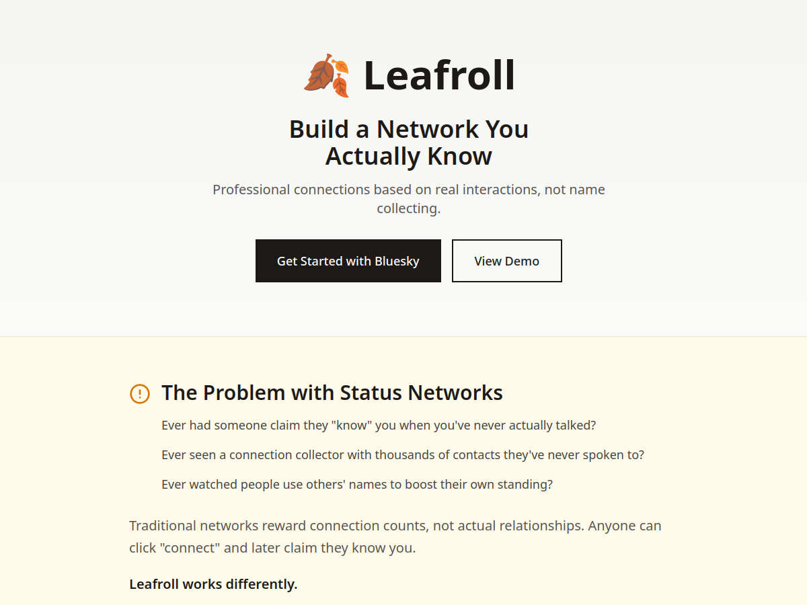
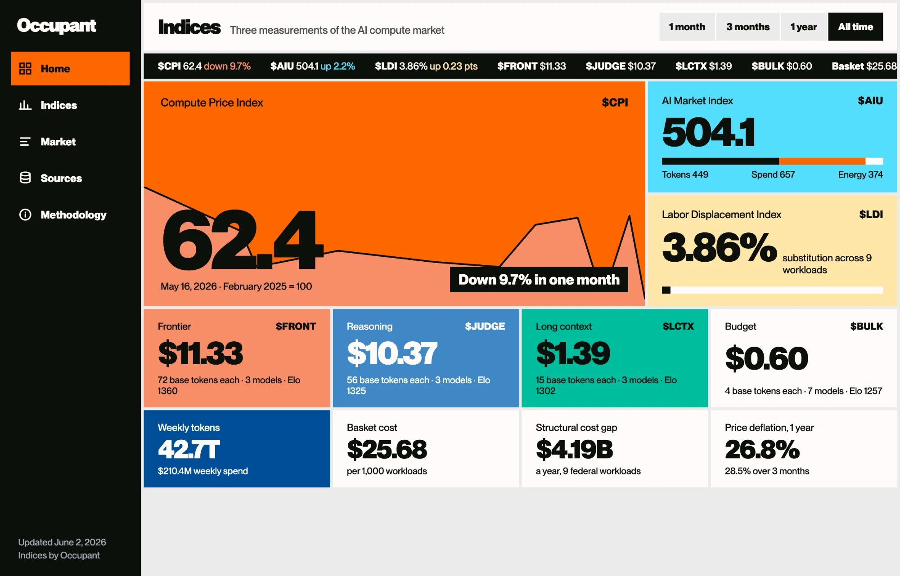

Design engineer. A compendium of software, tooling, open source projects & technical side quests.
Beachwave

A deployable reference for live audio rooms on ATProto. Sign in with ATProto OAuth, create a room, publish its metadata, and connect audio through LiveKit — then fork the repo and run your own version.
Mallo

Pesäpallo, the Finnish cousin to American baseball, has long operated using conventional counting stats. As a longtime fan of the sport, I wondered if it were possible to build analytics/sabermetrics for Pesäpallo. Mallo is the first successful attempt at creating pitching, defensive & advanced batting metrics for the 104-year-old sport.
Play To Clinch

Earth’s first-ever team tennis computer game. College-format dual matches, a junior recruiting circuit, and GTT — a co-ed pro league — all on one continuous rating scale, driven by a deterministic point-by-point Python engine. Platform reuse in practice: a second sport stood up on a forked deterministic engine — directed, not hand-coded.
Oregon HS Tennis Power Rankings

A statewide sports-rating engine, playoff simulator, and live tournament toolkit for Oregon high school tennis. Four years of data, four original rating models, and a working analytics layer (Power Index, FWS, FWS+, TOSS) running across every classification — built end to end as one self-contained system.
Cap Buffet

Cap Buffet builds salary-cap systems from reusable mechanics and tests any league against them. Eighteen cap parts, fourteen leagues, eight currencies, all in the browser. Home to Lottery Lab, its draft-lottery sibling, and a directed agent build.
Building on the AT Protocol
Protocol-Native Applications
A body of protocol-native experiments. PBJ, Leafroll, Glowrm, and more, rethinking dating, professional networking, and trust for a world where identity is portable and software is built on an open protocol. See the ATProto work →
SuperInnings

Baseball restructured into one continuous 27-out half per side — a full simulated world with its own stats, economy, and history. A deterministic simulation platform, directed not hand-coded — documented across 140+ engineering decision records.
Viperball

An invented gridiron sport with its own rulebook, a probability engine that plays it, a 280-team universe to play it in, and a terminal-style stats portal serving the whole thing — with a custom analytics framework built specifically for the sport’s mechanics. Directed agent build — ~110K lines of directed code across ~60 decision records.
You Go First

A better matching model for dating apps, built on a speculative algorithm I designed that uses game mechanics and behavioral analytics to match people.
Tennis Polo (Toccer)

Tennis Polo is pretty straightforward. Two teams try to score goals using a tennis-sized ball, defended by a goalkeeper holding a tennis racket. The team with the most points wins. A sport I invented by accident at summer camp in 2004.
Glowrm

Trust infrastructure for ATProto social applications. Cross-app reputation, shared moderation, and a configurable resource-allocation system — the trust plumbing YGF and two other reference apps were designed against.
Leafroll

A professional network built on ATProto. Leafroll is built on earned, bilateral relationships and identity you carry with you, one of several protocol-native experiments.
Occupant Indices

Public measurement infrastructure for the AI economy. Three live indices — a compute price deflator, a synthetic activity unit modeled on the IMF’s SDR, and a labor displacement gauge built on federal procurement and wage data — recomputed daily from public sources, with the git history as the audit trail.
Concepts & Experiments (and other ideas…)
- closedtab 2026 npm ↗ Blog post ↗ An npm tool that gives human–agent work a shared memory: a consistent after-action record of what you asked for, what the agent did, and the calls it made on its own — so the next agent and future-you inherit the same trail.
- Claude skill.md for agent AARs 2026 Blog post ↗ GitHub ↗
- Consequence Design 2016 consequencedesign.com ↗